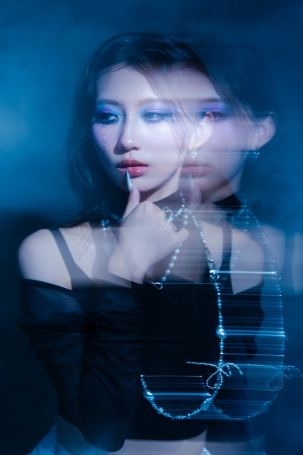

從舞蹈教室，走進攝影的世界——
帶著 8 年溫柔的陪伴，和工程師的理性目光，
我用鏡頭，說你說不出口的故事。
從舞蹈教室，走進攝影的世界——
帶著 8 年溫柔的陪伴，和工程師的理性目光，
我用鏡頭，說你說不出口的故事。
SERVICES
02 · EVENT PHOTOGRAPHY
「工程師的眼睛——我會在雜亂的現場裡，找到值得留住的角度。」
03 · DANCE PHOTOGRAPHY
「我數過 8 年的拍子，站在台下看。我知道哪一刻，是真正屬於你的。」
04 · PORTRAIT PHOTOGRAPHY
「你有故事，我有鏡頭。剩下的，我們一起想。」
05 · PET PHOTOGRAPHY
「牠最放鬆的樣子。你們負責做自己，我負責抓住瞬間。」

ABOUT · 關於我
現居台北市萬華，擅長捕捉情感的瞬間。
一個帶著笑容具親和力的女生。我有 8 年陪伴不同世代學生的舞蹈教學經驗，讓我練就了能撫平難題的溫柔溝通力；而機械工程的背景，則給了我冷靜撇開情緒的理性思維。
現在身為全職攝影師的我，用積極的心態迎向挑戰，期待認識更多夥伴，為貴公司創造最高溫度的品牌價值！
LET'S CREATE TOGETHER